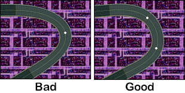

<!-- ======================================================================= -->

<HTML><Body BGColor=FFFFFF Text=000000 Link=0000FF ALink=9900FF VLink=0000FF>

<Center><Table Width=550 Border=0 CellSpacing=0 CellPadding=5
 Style="border: 1px solid #000000;"><TR><TD>
<DIV Align="Justify">

<Center><Font Size=+2><B>
Important Patching Information
</B></Font><BR><A HREF="Contents.html">Back to Contents</A></Center><BR>

The message that appears the first time you run the program explains some key 
points when creating courses. The message is the following text:<BR><BR>

<I>Under certain conditions, courses will fail to load once patched to the ROM. 
If control points are too close together, the course will fail to load. If a 
course curves too sharply, the course will fail to load. If there are too many 
decorative elements on the course, the coruse will fail to load.<BR><BR>

Remember to check the "Recalculate Header Checksum" check box if you want to 
immediately play patched courses on console or an emulator.</I><BR><BR>

More information about patching courses to ROM can be found on the 
<A HREF="Patch.html">Patch to ROM Window</A> page.<BR><BR>

A common way that people make courses unplayable is to make the course curve 
more than 90&deg; around a single control point. In the picture below, the 
image labeled "Bad" shows how this can be done. The image labeled "Good" shows 
a nearly identical curve created with two control points instead of one. Doing 
what is "Good" will lessen the chance of a course being unable to load at 
run-time.<BR><BR>

<Center></Center>

</TD></TR></Table></Center>
</Body></HTML>